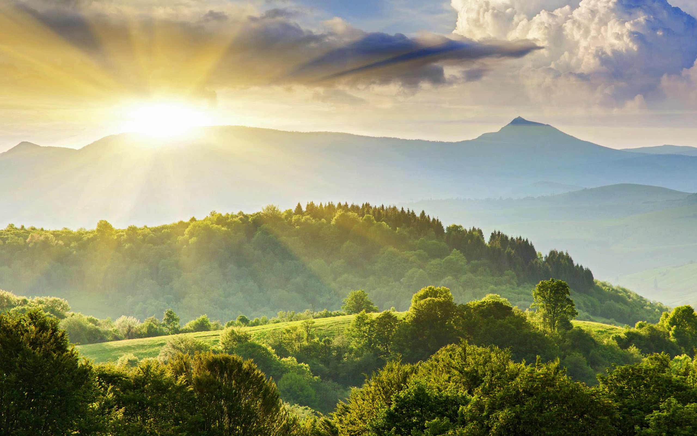
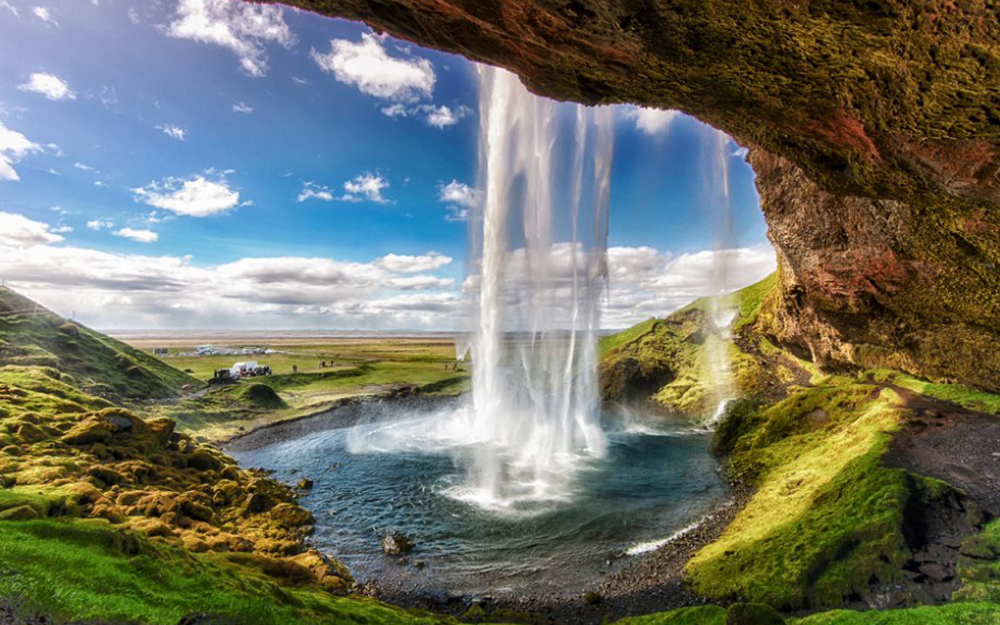

Nature
Look deep into nature, and then you will understand everything better.
- Albert Einstein

What is Nature?
Nature, in the broadest sense, is the natural, physical, or material world or universe. "Nature" can refer to the phenomena of the physical world, and also to life in general. The study of nature is a large part of science. Although humans are part of nature, human activity is often understood as a separate category from other natural phenomena. The word nature is derived from the Latin word natura, or "essential qualities, innate disposition", and in ancient times, literally meant "birth".[1] Natura is a Latin translation of the Greek word physis (φύσις), which originally related to the intrinsic characteristics that plants, animals, and other features of the world develop of their own accord.[2][3] The concept of nature as a whole, the physical universe, is one of several expansions of the original notion; it began with certain core applications of the word φύσις by pre-Socratic philosophers, and has steadily gained currency ever since. This usage continued during the advent of modern scientific method in the last several centuries.
What is Nature?
Nature, in the broadest sense, is the natural, physical, or material world or universe. "Nature" can refer to the phenomena of the physical world, and also to life in general. The study of nature is a large part of science. Although humans are part of nature, human activity is often understood as a separate category from other natural phenomena. The word nature is derived from the Latin word natura, or "essential qualities, innate disposition", and in ancient times, literally meant "birth".[1] Natura is a Latin translation of the Greek word physis (φύσις), which originally related to the intrinsic characteristics that plants, animals, and other features of the world develop of their own accord.[2][3] The concept of nature as a whole, the physical universe, is one of several expansions of the original notion; it began with certain core applications of the word φύσις by pre-Socratic philosophers, and has steadily gained currency ever since. This usage continued during the advent of modern scientific method in the last several centuries.
Earth
 Earth is the only planet known to support life, and its natural features are the subject of many fields of scientific research. Within the solar system, it is third closest to the sun; it is the largest terrestrial planet and the fifth largest overall. Its most prominent climatic features are its two large polar regions, two relatively narrow temperate zones, and a wide equatorial tropical to subtropical region.[6] Precipitation varies widely with location, from several metres of water per year to less than a millimetre. 71 percent of the Earth's surface is covered by salt-water oceans. The remainder consists of continents and islands, with most of the inhabited land in the Northern Hemisphere.
Earth has evolved through geological and biological processes that have left traces of the original conditions. The outer surface is divided into several gradually migrating tectonic plates. The interior remains active, with a thick layer of plastic mantle and an iron-filled core that generates a magnetic field. This iron core is composed of a solid inner phase, and a fluid outer phase. Convective motion in the core generates electric currents through dynamo action, and these, in turn, generate the geomagnetic field.
Earth is the only planet known to support life, and its natural features are the subject of many fields of scientific research. Within the solar system, it is third closest to the sun; it is the largest terrestrial planet and the fifth largest overall. Its most prominent climatic features are its two large polar regions, two relatively narrow temperate zones, and a wide equatorial tropical to subtropical region.[6] Precipitation varies widely with location, from several metres of water per year to less than a millimetre. 71 percent of the Earth's surface is covered by salt-water oceans. The remainder consists of continents and islands, with most of the inhabited land in the Northern Hemisphere.
Earth has evolved through geological and biological processes that have left traces of the original conditions. The outer surface is divided into several gradually migrating tectonic plates. The interior remains active, with a thick layer of plastic mantle and an iron-filled core that generates a magnetic field. This iron core is composed of a solid inner phase, and a fluid outer phase. Convective motion in the core generates electric currents through dynamo action, and these, in turn, generate the geomagnetic field.
Atmosphere, climate, and weather
The Earth's atmosphere is a key factor in sustaining the ecosystem. The thin layer of gases that envelops the Earth is held in place by gravity. Air is mostly nitrogen, oxygen, water vapor, with much smaller amounts of carbon dioxide, argon, etc. The atmospheric pressure declines steadily with altitude. The ozone layer plays an important role in depleting the amount of ultraviolet (UV) radiation that reaches the surface. As DNA is readily damaged by UV light, this serves to protect life at the surface. The atmosphere also retains heat during the night, thereby reducing the daily temperature extremes.
Water on Earth
Water is a chemical substance that is composed of hydrogen and oxygen and is vital for all known forms of life.[24] In typical usage, water refers only to its liquid form or state, but the substance also has a solid state, ice, and a gaseous state, water vapor, or steam. Water covers 71% of the Earth's surface.[25] On Earth, it is found mostly in oceans and other large water bodies, with 1.6% of water below ground in aquifers and 0.001% in the air as vapor, clouds, and precipitation.[26][27] Oceans hold 97% of surface water, glaciers, and polar ice caps 2.4%, and other land surface water such as rivers, lakes, and ponds 0.6%. Additionally, a minute amount of the Earth's water is contained within biological bodies and manufactured products.